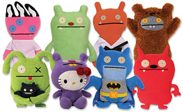
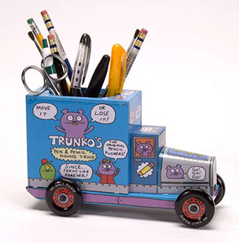

In late 2001, David Horvath signed a letter to his college sweetheart, Sun-Min Kim, with a drawing of a wide-eyed monster with long arms, stubby legs, fangs and a giant head.
Ms. Kim turned the artwork into a plush doll, and Mr. Horvath showed it to a friend who owned a Los Angeles toy store. Orders from more toy stores began trickling in, and by the end of 2002, sales were outpacing the couple's ability to keep up.
Pretty Ugly—now based in Green Brook, N.J., and employing about a dozen people—has generated more than $100 million in retail sales since its inception.
It became profitable in 2003, and today its toys, apparel, ceramics and other branded goods are sold in more than 10,000 retail stores world-wide. Consumers buy over two million UglyDolls-branded items annually.
Text from: The Wall Street Journal
Images from: The Ugly Doll Website